Técnicas analíticas con R
Brevísima introducción al Análisis de Series Temporales
Antonio J. Pérez-Luque
Ecoinformática. Curso 2014-2015
¿Qué es una
Serie Temporal?
- Conjunto de observaciones registradas a intervalos regulares de tiempo.
- En cada instante \(\t_{i}\) la observación proviene de una variable que puede tener igual o diferente distribución
El orden de llegada de los datos es importante
Ejemplos: temperaturas, productividad del bosque a lo largo del año, cantidad de agua que lleva un río cada día, etc.
¿Por qué nos interesa analizar una
Serie Temporal?
- Para comprobar la ciclidad de un fenómeno
- Analizar si los datos se ajustan bien a un modelo teórico
- Analizar fenómenos espacio-temporales (avanzado)
Evolución de un proceso ecológico en diferentes ecosistemas
Objetivos:
Explicar la evolución de un fenómeno a lo largo del tiempo
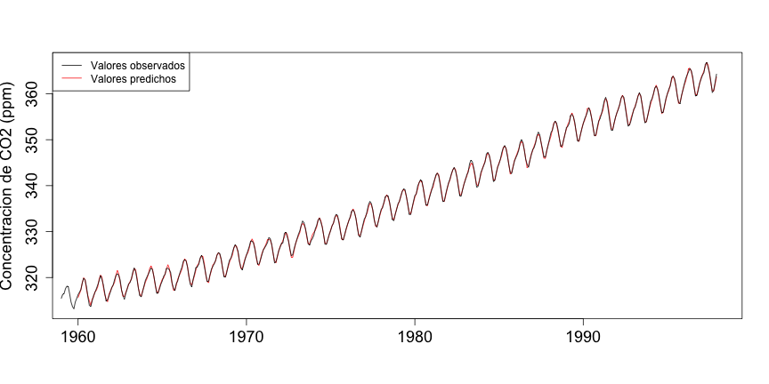
Objetivos
Predecir su valores en el futuro
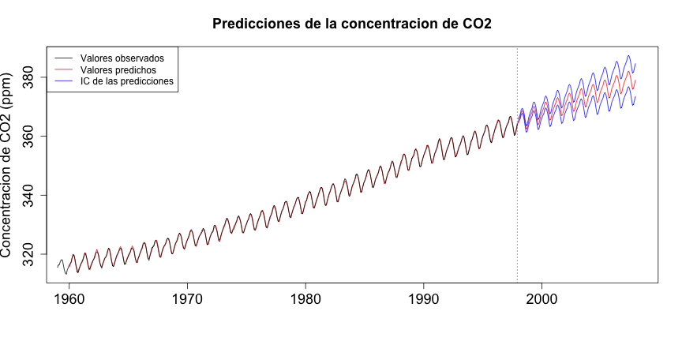
Tipos de Series Temporales?
Estacionarias
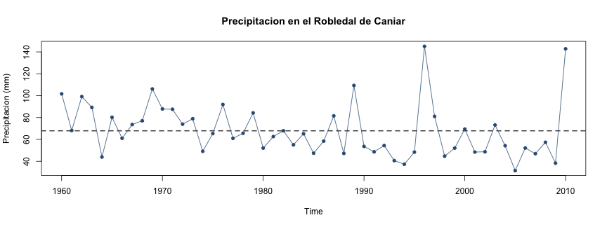
- Los datos varían todo el tiempo alrededor del mismo valor medio y con la misma variabilidad.
- La relación entre las observaciones en dos momentos del tiempo diferentes sólo depende del número de observaciones que distan entre ambas
No Estacionarias
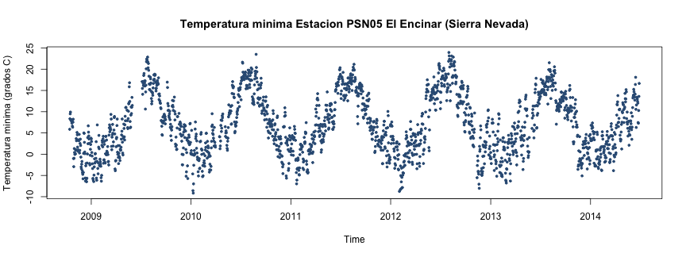
- La media, la varianza y/o la relación entre distantes equiespaciados cambian a lo largo del tiempo.
- Algunas oscilan con periodicidad regular (estacional)
No Estacionarias
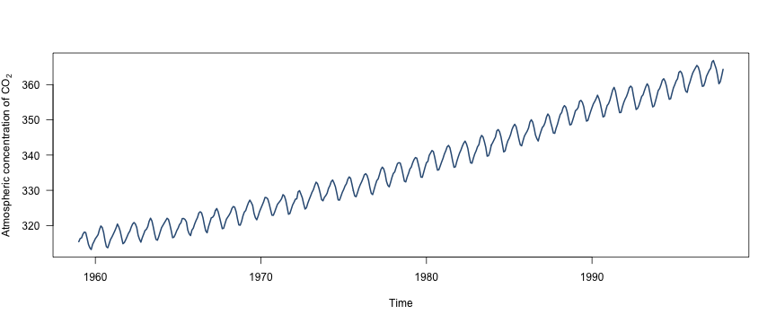
- Tendencia (serie no estacionaria estacional con tendencia)
No Estacionarias
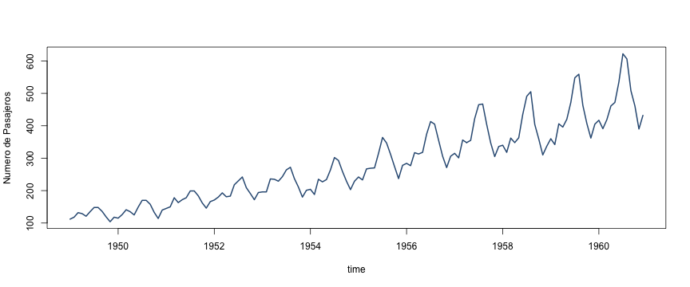
- Aumenta la variabilidad con el tiempo (serie no estacionaria con aumento de variabilidad)
Tutoriales y Recursos:
CRAN Task View: Time Series Analysis
Falk M (2012). A First Course on Time Series Analysis - Examples with SAS. Chair of Statistics, University of Wurzburg. link
Cayuela L and Justel A (2012) Series temporales en R.

Análisis de la tendencia
- ¿Incrementan o disminuyen los valores con el tiempo?
- En terminos estadísticos, determinar si la distribución de probabilidad de los datos cambian con el tiempo.
- Interés en determinar la cantidad o tasa de cambio
Hipótesis
- \(H_0\): Los datos son independientes y aleatoriamente ordenados (No existe tendencia)
- \(H_1\): Existe una tendencia
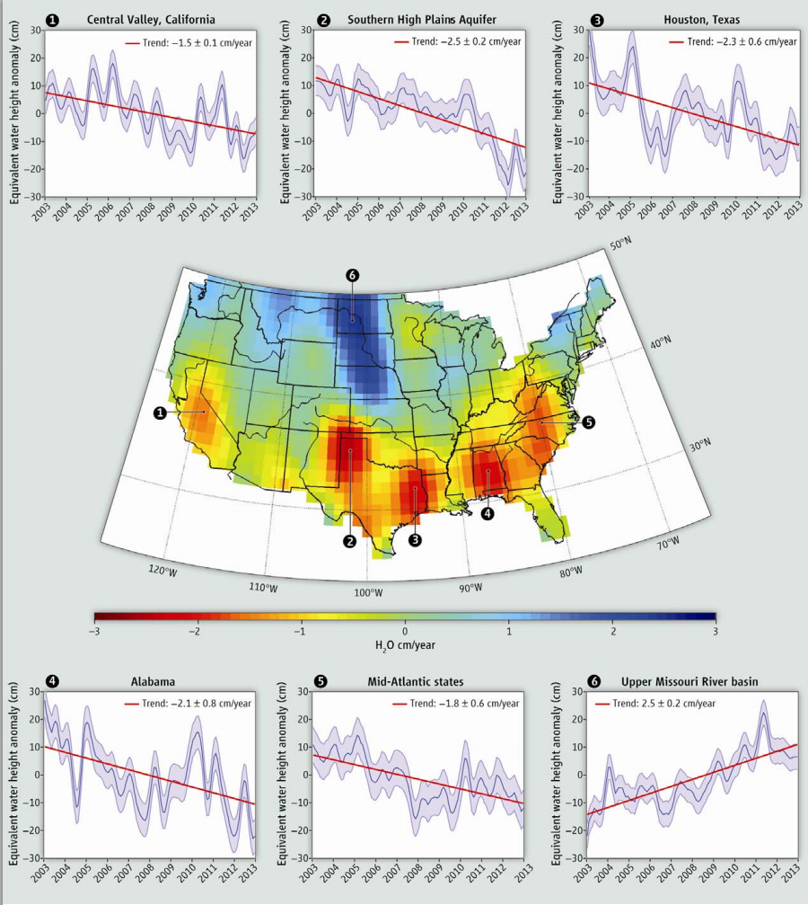
Un pequeño reto
Material
- Repositorio de la asignatura (sesion 5)
- Presentación: http://ajpelu.github.io/ts_slides_ecoinfo/)
- Código
m <- lm(p$prec~p$year)
msum <- summary(m)
msum$coefficients
## Estimate Std. Error t value Pr(>|t|)
## (Intercept) 953.265 447.6411 2.130 0.03826
## p$year -0.446 0.2255 -1.978 0.05357
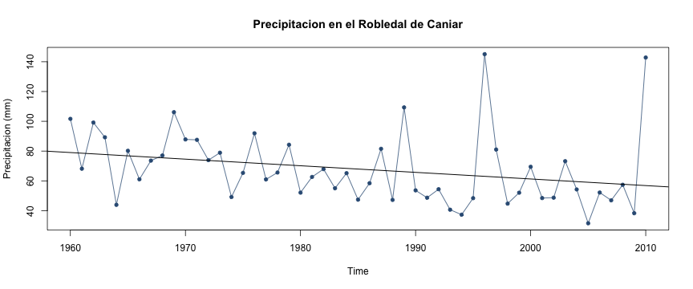
Test de Mann-Kendall
- Es un caso especial del test de correlación de Kendall (\(\tau\))
- Comprobar si los valores de la variable Y tienden a aumentar o a disminuir con el tiempo
- Basado en el ranking relativo de los datos (no sobre los datos en sí)
- Test no paramétrico (no asumimos distribuciones de los datos)
(Mann, 1945; Kendall, 1975)
- Se calcula un valor de un estadístico (\(\tau\)):
- \(\tau =\) -1; tendencia decreciente
- \(\tau =\) 0; no tendencia
- \(\tau =\) 1; tendencia ascendente
Muy utilizado para el análisis de tendencias en series temporales en climatología, hidrología, etc.
ventajas:
- Es un test no paramétrico (no requiere que asumamos distribuciones en los datos)
- Tiene una baja sensibilidad para cambios abruptos (datos faltantes)
inconvenientes:
- no predicción
- no informa sobre la tasa de cambio (pendiente)
-
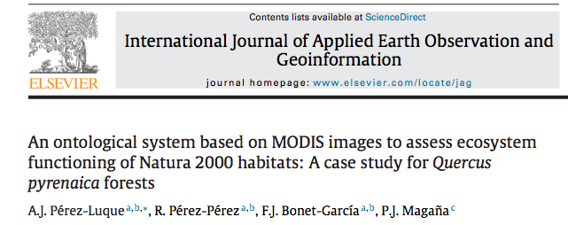
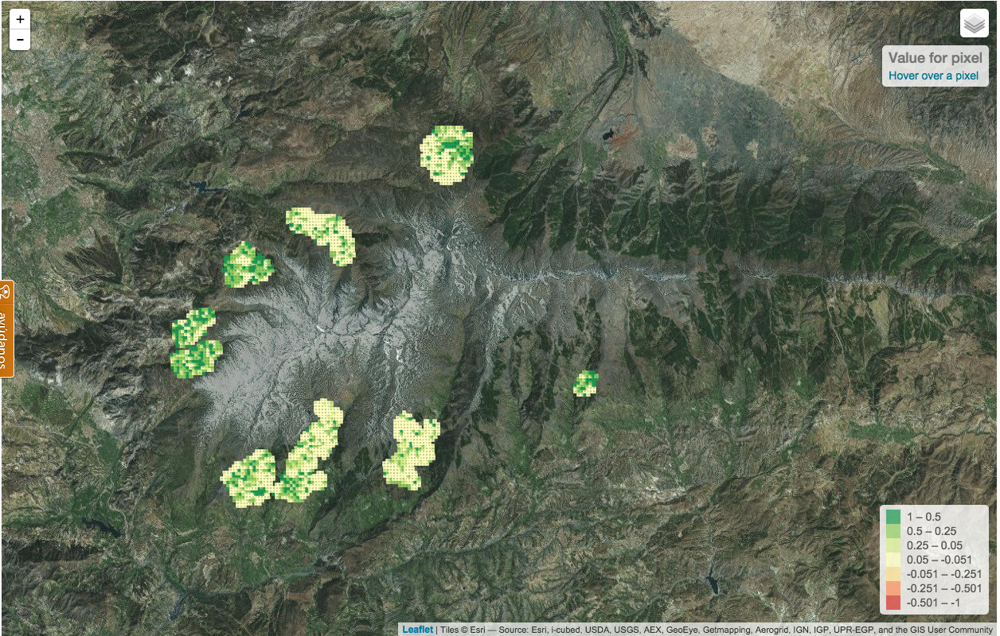
Caso de estudio
Evolución de la sequía en el estado de California durante los últimos 120 años
- La sequía es una preocupación global (cambio climático + aumento demanda)
- Los modelos indican que las regiones secas del mundo serán mas secas en el futuro
- En US, provoca daños anuales de entre $6-8 mill.
- California es una de las regiones mas afectadas por la sequía
- Pérdidas de -1.5 cm/año en las reservas de agua entre 2003 y 2012
- Aumento severidad en los últimos años, especialmente el año 2014 en California
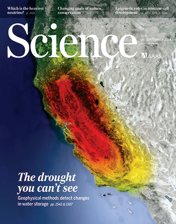
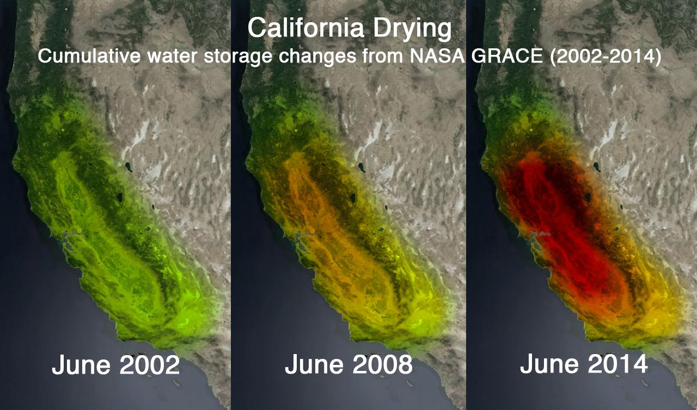
Satellite image from NASA's Gravity Recovery and Climate Experiment (GRACE) mission showing California's devastating loss of fresh water (in red) since 2002. NASA/JPL-Caltech/UCA
¿Qué vamos a hacer?
Analizar la tendencia temporal del índice de sequía anual scPDSI (self-calibrate Palmer Drought Severity Index) durante los últimos 120 años (datos del WestWideDroughtTracker)
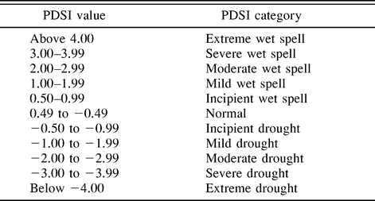
anual <- read.table('http://www.iecolab.es/ecoinfo/scpdsi_annual.csv', header = TRUE, sep=',')
str(anual)
## 'data.frame': 120 obs. of 2 variables:
## $ year : int 1895 1896 1897 1898 1899 1900 1901 1902 1903 1904 ...
## $ scpdsi: num -0.85 1.05 -0.41 -1.73 0.5 -0.07 -0.27 0.01 -1.39 0.13 ...
head(anual)
## year scpdsi
## 1 1895 -0.85
## 2 1896 1.05
## 3 1897 -0.41
## 4 1898 -1.73
## 5 1899 0.50
## 6 1900 -0.07
plot(anual$year, anual$scpdsi, type='o',
xlab='year', pch=19, col='#325B84',
ylab='scpdsi', ylim=c(-6,6))
abline(h=0)
abline(h=-2, lty=2, col='red')
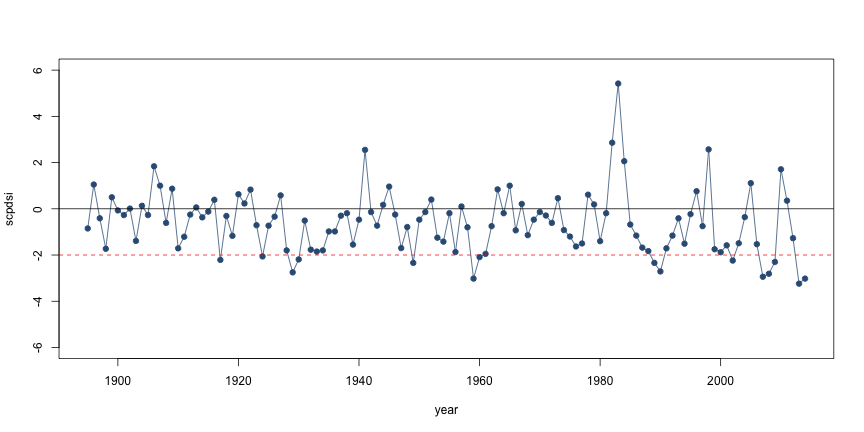
Analizar la tendencia
library('Kendall')
# Aplicar la función MannKendall (consultar ayuda)
m <- MannKendall(anual$scpdsi)
m
## tau = -0.152, 2-sided pvalue =0.014
¿Se podría estimar la tendencia mediante un modelo lineal?
ml <- lm(anual$year~anual$scpdsi)
summary(ml)

summary(ml)
##
## Call:
## lm(formula = anual$year ~ anual$scpdsi)
##
## Residuals:
## Min 1Q Median 3Q Max
## -60.74 -30.31 -1.52 28.56 64.41
##
## Coefficients:
## Estimate Std. Error t value Pr(>|t|)
## (Intercept) 1952.12 3.48 561.56 <2e-16 ***
## anual$scpdsi -3.82 2.35 -1.62 0.11
## ---
## Signif. codes: 0 '***' 0.001 '**' 0.01 '*' 0.05 '.' 0.1 ' ' 1
##
## Residual standard error: 34.5 on 118 degrees of freedom
## Multiple R-squared: 0.0219, Adjusted R-squared: 0.0136
## F-statistic: 2.64 on 1 and 118 DF, p-value: 0.107
¿En que meses es mayor la tendencia
##
## Attaching package: 'zoo'
##
## The following objects are masked from 'package:base':
##
## as.Date, as.Date.numeric
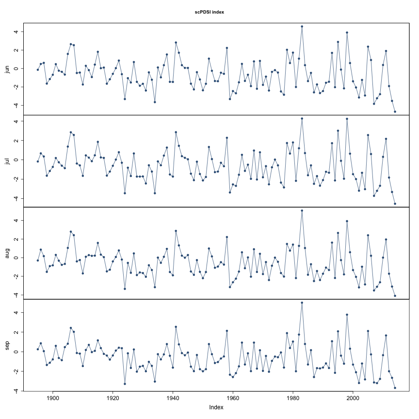
Estimación de la magnitud de la tendencia
- estimador Theil-Sen o estimador de la pendiende de Sen
- Se trata de un estimador robusto de una tendencia (no es un test)
- Se calcula la mediana de las pendientes entre todos los pares de puntos
- Permite comparar la tasa de cambio de las tendencias entre series temporales
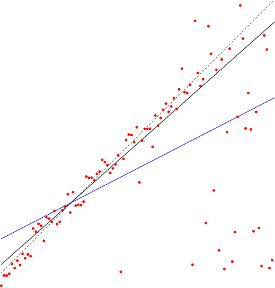
Cargar Datos
mensual <- read.table('http://www.iecolab.es/ecoinfo/scpdsi_monthly.csv', header = TRUE, sep=',')
library('reshape2') # Para manipular datos
library('zoo') # Para series temporales
str(mensual)
## 'data.frame': 480 obs. of 3 variables:
## $ year : int 1895 1896 1897 1898 1899 1900 1901 1902 1903 1904 ...
## $ value: num -0.14 0.49 0.61 -1.64 -1.15 -0.68 0.47 -0.24 -0.36 -0.66 ...
## $ month: int 6 6 6 6 6 6 6 6 6 6 ...
head(mensual)
## year value month
## 1 1895 -0.14 6
## 2 1896 0.49 6
## 3 1897 0.61 6
## 4 1898 -1.64 6
## 5 1899 -1.15 6
## 6 1900 -0.68 6
Preparar Datos
mensuales <- dcast(mensual, year ~ month, value.var = 'value')
names(mensuales) <- c('year','jun','jul','aug','sep')
head(mensuales)
## year jun jul aug sep
## 1 1895 -0.14 -0.17 -0.30 0.25
## 2 1896 0.49 0.67 0.87 0.86
## 3 1897 0.61 0.35 0.17 0.06
## 4 1898 -1.64 -1.64 -1.52 -1.35
## 5 1899 -1.15 -1.15 -0.90 -1.12
## 6 1900 -0.68 -0.73 -0.82 -0.78
Convertir datos
mizoo <- zoo(mensuales[-1], mensuales[,1])
str(mizoo)
## 'zoo' series from 1895 to 2014
## Data: num [1:120, 1:4] -0.14 0.49 0.61 -1.64 -1.15 -0.68 0.47 -0.24 -0.36 -0.66 ...
## - attr(*, "dimnames")=List of 2
## ..$ : NULL
## ..$ : chr [1:4] "jun" "jul" "aug" "sep"
## Index: int [1:120] 1895 1896 1897 1898 1899 1900 1901 1902 1903 1904 ...
Calcular la tendencia y estimar la pendiente
library('wq')
theil <- mannKen(as.ts(mizoo))
## Loading required package: ggplot2
theil
## sen.slope sen.slope.pct p.value S varS miss tau
## jun -0.01268 -1.961 0.008621 -1159 194349 0 -0.1623
## jul -0.01204 -1.965 0.010439 -1130 194351 0 -0.1583
## aug -0.01082 -1.862 0.014204 -1082 194352 0 -0.1515
## sep -0.01164 -2.035 0.002963 -1311 194345 0 -0.1836
Reto extra:
¿Cómo ha evolucionado la sequía anual en los últimos 15 años?
¿Qué meses han mostrado una mayor tasa de cambio?
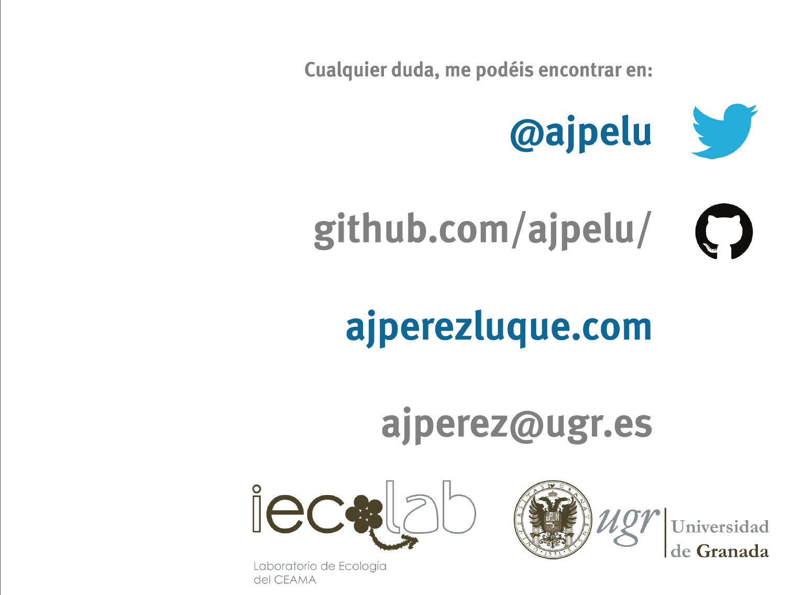